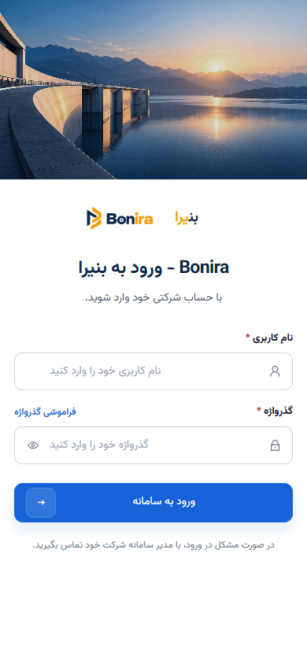

BONIRA · five authentication visual decisions
2026-11-10 · Chrome 156.0.8078.80 · current working tree at 865fa3f3 · 1440 × 900 and 390 × 844 CSS px.
All five decisions remain NEEDS_PO_REVIEW / REFERENCE_MISSING.Shared authority: BONIRA UI guidelines and DC-01 / DC-09. Historical RV-001 login capture and F1 preservation evidence establish dated implementation, without page-specific PO approval.
Candidate located: E:/ERP_Construction_Documents/Main Page/BONIRA_Login_10of10_v7_palette_aligned.html. No explicit approval or separate accepted recovery design was established in the reviewed sources. The candidate was not adopted as authority.
PO disposition for each item: approve the pictured current design as the reference, or identify the approved reference / exact changes. Record decision, approver, date and source in the existing approval records. This package records no acceptance. Images open at native size.
Decision 1/5 · PENDINGLogin
INV-ACCOUNTS-LOGIN--UAT-01
/accounts/login/Retain the current split image/form composition, branding, field spacing and stacked mobile order. PO response: pending.
1440 CSS px · current rendered screen390 CSS px · current rendered screen
Decision 2/5 · PENDINGRecovery request
INV-ACCOUNTS-PASSWORD-RESET--CV-AUTH-01
/accounts/password/reset/Approve the current standalone card, email field, guidance, primary action and return link. PO response: pending.
Decision 3/5 · PENDINGRecovery request received
INV-ACCOUNTS-PASSWORD-RESET-DONE--CV-AUTH-01
/accounts/password/reset/done/Approve the neutral receipt message, hierarchy, whitespace and return action. PO response: pending.
Decision 4/5 · PENDINGChoose a new password
INV-ACCOUNTS-PASSWORD-RESET-CONFIRM--CV-AUTH-01
/accounts/password/reset/<uid>/<token>/Approve the current two-password card, labels, guidance and submit action. PO response: pending.
Decision 5/5 · PENDINGPassword updated
INV-ACCOUNTS-PASSWORD-RESET-COMPLETE--CV-AUTH-01
/accounts/password/reset/complete/Approve the current success-message card and login action. PO response: pending.
Synthetic anonymous/recovery context; confirm uses a valid synthetic token kept outside evidence. Screenshots contain no credential or token. Prior successful authentication/security tests were not rerun. Capture results · Closeout report